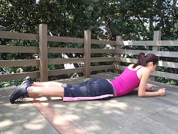
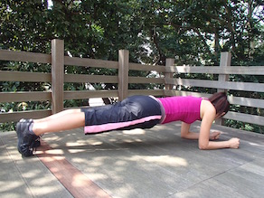
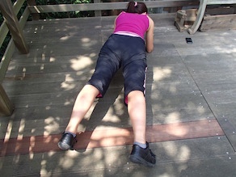
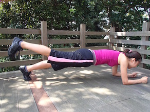
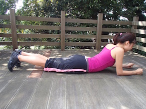
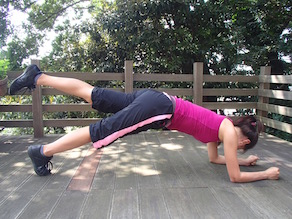

セクシーなくびれをつくる！STEP2
- ① うつぶせで両肘を肩の真下、両脚は腰幅でまっすぐ伸ばす。
- ② 骨盤を床から浮かせ、そのままの状態でキープ。


- ① 基本のホバーの状態から右足を外側に出す。左足も同様に。
- ② 右足から左足の順に内側に足を戻す。
- ※最初はゆっくり歩くペースから駆け足へと、どんどんペースを上げてください！

- ① 基本のホバーの状態から右足を上にあげる。右足を下ろしたら左足を上げる。
- ② 右足から左足の順に内側に足を戻す。
- ※最初はゆっくり歩くペースから駆け足へとどんどんペースを上げて！

- ① 床でうつぶせになり、肩の真下に肘をついて上体を起こし、両脚を肩幅でまっすぐ後ろに伸ばす。
- ② おなかを床に付けた姿勢から、一気におなかを床から引き離し、
背中を丸めて骨盤を後傾させたら、素早く元の状態に戻る。


広告